PadForge
Press
& media.
Official images and product information for stories about PadForge.
Download press kitScreenshots, logos and fact sheet for 6.0.0, with the 6.0 reviewer guidesZIP · 4.0 MB
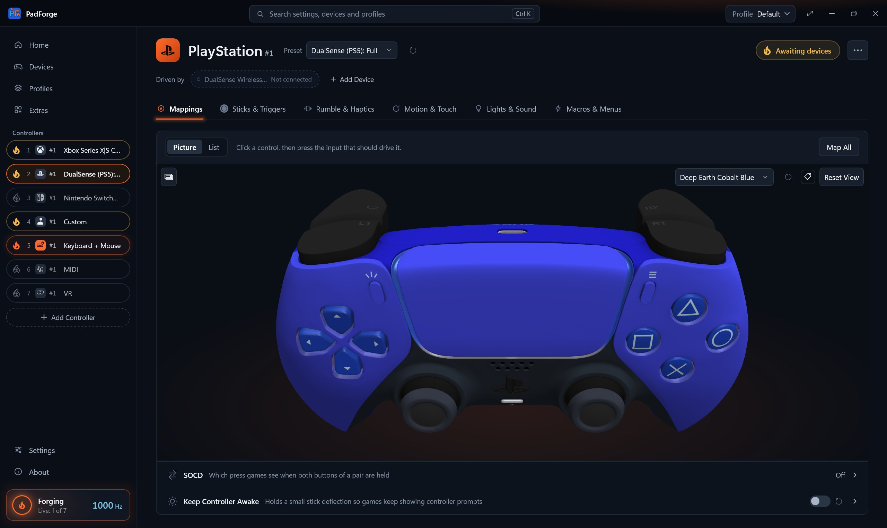
PadForge 6.0.0A rebuilt interface with Home, Extras and search, a wheel that centers the way a car’s steering does, crosshairs and a magnifier over your game, Flydigi Apex triggers, lights and screens, SInput pads, and polling up to 10,000 Hz. No setting is removed.
Release notesPadForge 6.0.0
What’s new

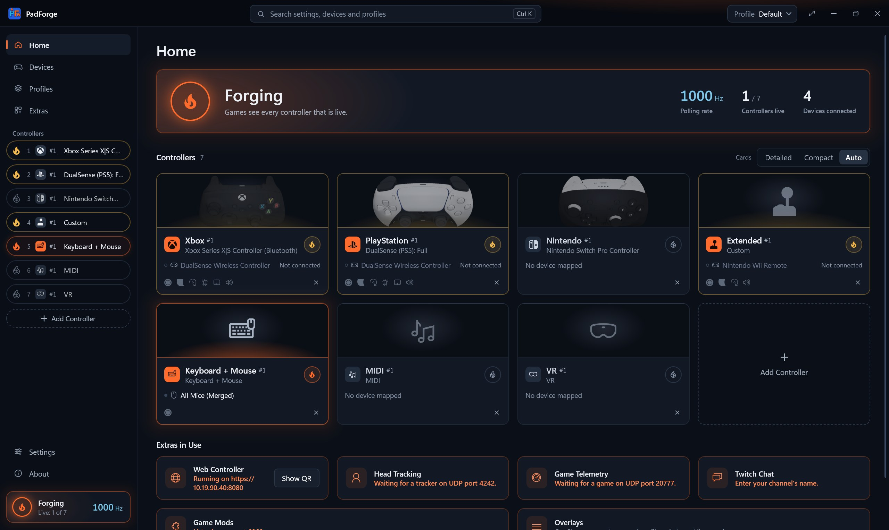
- PadForge 6The interface is rebuilt around what most people do first, and no setting is removed. Home replaces the Dashboard: one switch starts the engine, and each virtual controller has a card with a picture of its controller that lights as you press. On a first run, one click makes the first controller for the connected device, mapped 1:1. The services that stood on the Dashboard are tiles on a new Extras page, and each opens a page of its own. A controller’s tabs become six sections: Mappings, Sticks & Triggers, Rumble & Haptics, Motion & Touch, Lights & Sound, and Macros & Menus. Ctrl+K finds pages, controllers, devices, profiles, settings and actions. No controller was put through every page by hand.
- Wheel centering from a car’s steeringA force feedback wheel can center the way a car’s steering does. The new Centering card keeps the plain spring as Spring mode and adds Vehicle mode, which puts on the rim the torque a car’s steering gives at its speed and grip. It offers a Sedan, a Compact, a Van, a Race Car and the Stanford X1, and reads the speed from your game’s telemetry. Release Test measures the wheel with your hands off it and sets the damping that brings it back without swinging past center. No wheel has run it yet. Every stability and Release Test result comes from a simulated wheel.
- Crosshair and MagnifierTwo new extras. Crosshair shows up to ten crosshairs over your game, each a cross, a circle, a dot or a picture of your own. Magnifier is a lens like a sniper scope, the whole display zoomed in, or a spotlight that darkens the rest, at 1.25 to 16 times. Macros show and hide either one, and one shows the magnifier only while a button is held. A game in exclusive full screen hides them, so run it windowed or borderless.
- Flydigi Apex 4, Apex 5 and Apex 6 ProThese pads get what a DualSense or an Xbox pad gets on a virtual controller: adaptive trigger effects, impulse triggers and their own lights on the Lighting card. Controller Screen… sends a picture or a GIF to the pad’s screen by cable. The Apex 4, in DInput mode, and the Apex 5 have triggers that resist. The Apex 6 Pro’s trigger coils vibrate, and its grip coils play the DualSense haptic track. No Flydigi pad has run against PadForge yet.
- SInput padsSInput is Hand Held Legend’s HID gamepad protocol. A pad that speaks it arrives with its buttons, sticks, triggers, motion, touchpads, battery and rumble, and plays PadForge’s sounds on its haptics. An Extended virtual controller can be an SInput Gamepad too. No SInput pad has run against PadForge yet, and no game has run on the virtual one.
- Polling up to 10,000 HzThe polling rate is set in hertz, from 60 to 10,000, in Settings and in each profile. The default stays 1,000 Hz. It was a whole number of milliseconds, and a saved interval becomes its rate as it loads. On a PC whose timer wakes the engine 2,000 times a second, a higher rate runs several passes at each wake.
- HIDMaestro 2.3.0HIDMaestro now has 344 device profiles, and PadForge offers 246 of them: 143 controllers, 51 keyboards and 52 mice. Six are new: the Xbox One S Controller (Model 1708): Full, the USB forms of the Nintendo Switch Online Genesis, N64 and SNES pads, and the Joy-Con Charging Grip with the left or the right Joy-Con. No PadForge build has driven the six new profiles yet. On Windows on ARM every virtual controller now runs as a USB device that Windows’ own drivers bind.
- More RGB devicesPadForge lights 1,572 RGB devices by itself, among them the ROG Falchion Ace 75 HE key by key, Cooler Master’s MK721 and CK721 LINE, the Roccat Kone XTD and the light bars of the Corsair K70 PRO MINI WIRELESS. None of these has run against PadForge yet. PadForge now knows 2,687 devices by USB identity.
In motion
The 5.3 film
144 seconds of music and on-screen text, and a narrated version with captions.
PadForge 5.3
2:24 MP460 fpsNew in 5.3.0
PadForge 5.2, narrated
1:59 MP4CaptionsWith a screen reader
The narrated version runs 1 minute 59 seconds. A generated voice describes PadForge, English captions follow it, and its middle is a recording of the NVDA screen reader reading PadForge 5.1.0, the release that brought screen-reader support.
A 144-second film with music and on-screen text, and no narration. An Xbox controller becomes the Xbox 360 pad, DualSense or Steam Controller a game expects. The film then shows what is new in PadForge 5.3: reWASD and DS4Windows profiles imported whole, key-by-key lighting on 1,565 RGB devices, lights that follow your screen, a keyboard you type on with the controller, and Twitch chat at the controls. It tours mapping, force feedback, motion, phones and remote play, and shows HIDMaestro 2.1 holding input when every processor is busy: in HIDMaestro's own test, a virtual DualShock 4's slowest frame took 1.4 ms instead of 360. It ends on the price: free.
For reviewers
Reviewer guides
Routes and step-by-step sessions for a review of 6.0.
The brief helps you pick a route for the hardware you have. The field guide gives each session its equipment, setup, steps, what a pass looks like and how to reset. The procedures follow the documentation and were not run while the guides were written.
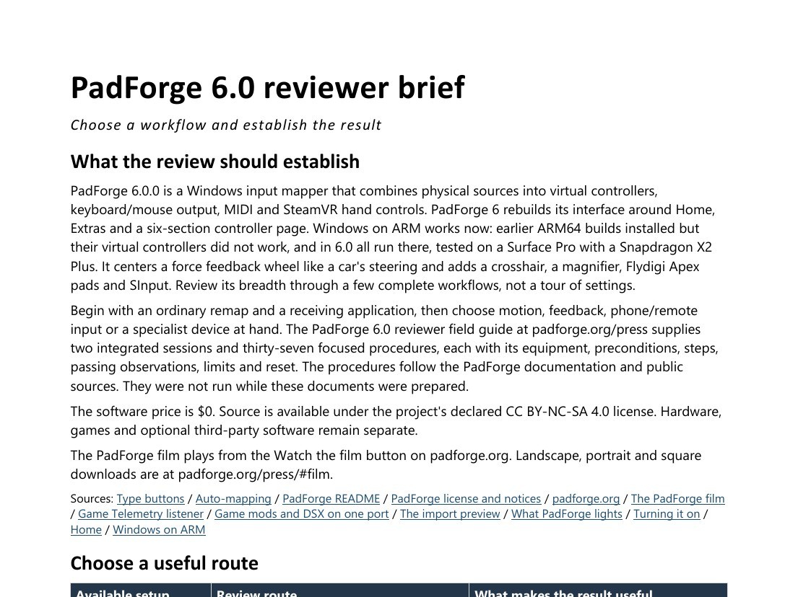
Reviewer brief
4 pages PDF154 KBUpdated for 6.0.0
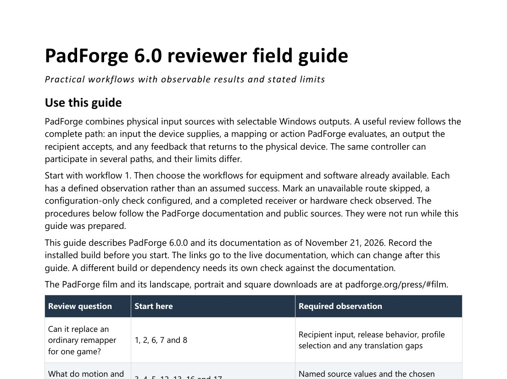
Reviewer field guide
39 pages PDF704 KBUpdated for 6.0.0
In the app
Screenshots
Full resolution. Original proportions.
Home
2560 × 1528 JPGNew in 6.0.0

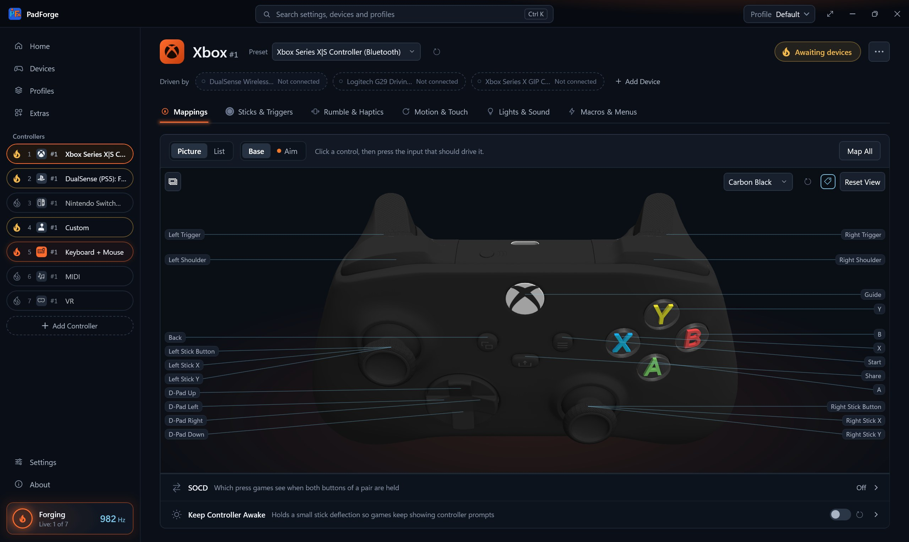
A controller’s page
2560 × 1528 JPGNew in 6.0.0

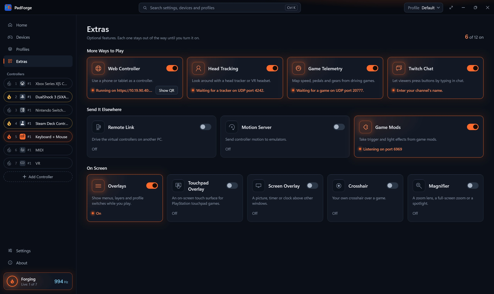
Extras
2560 × 1528 JPGNew in 6.0.0

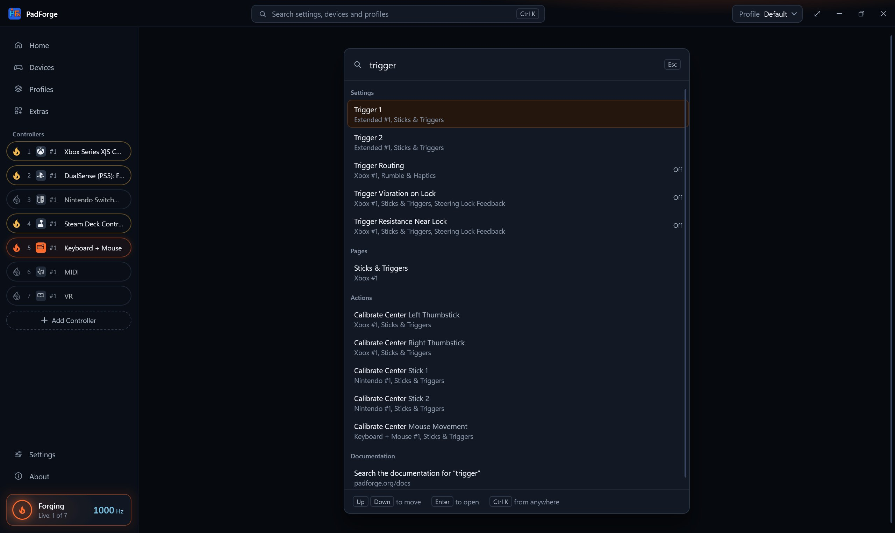
Search
2560 × 1528 JPGNew in 6.0.0

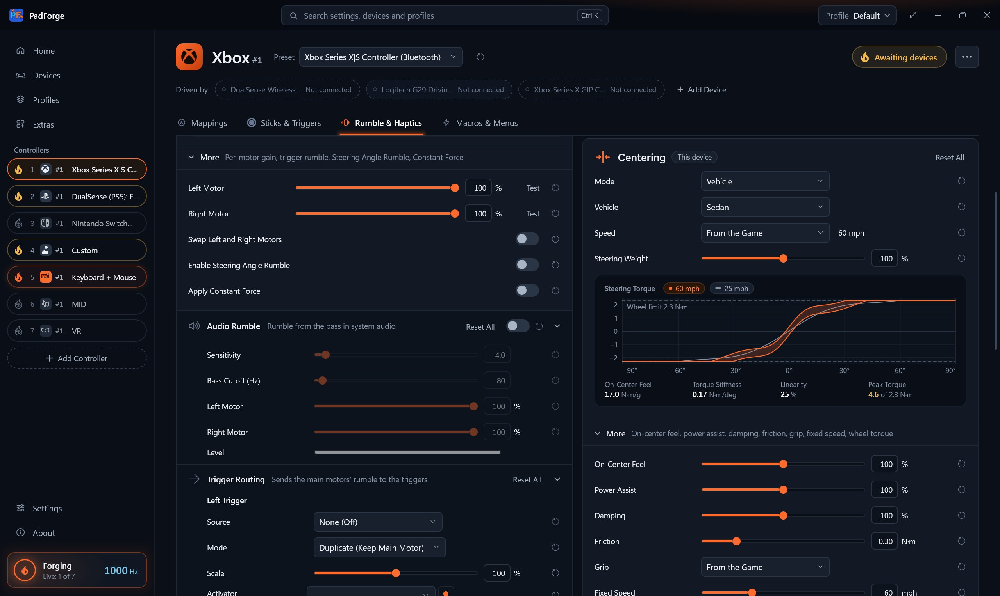
Wheel centering
2560 × 1528 JPGNew in 6.0.0

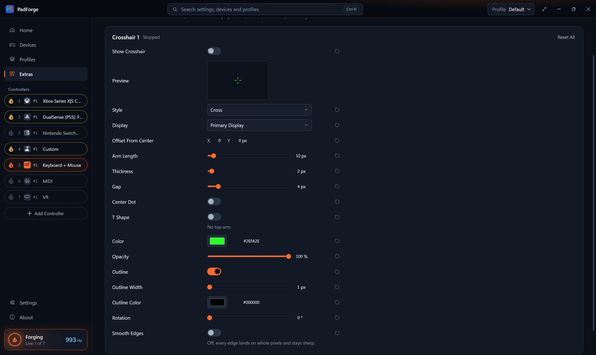
Crosshair
2560 × 1528 JPGNew in 6.0.0

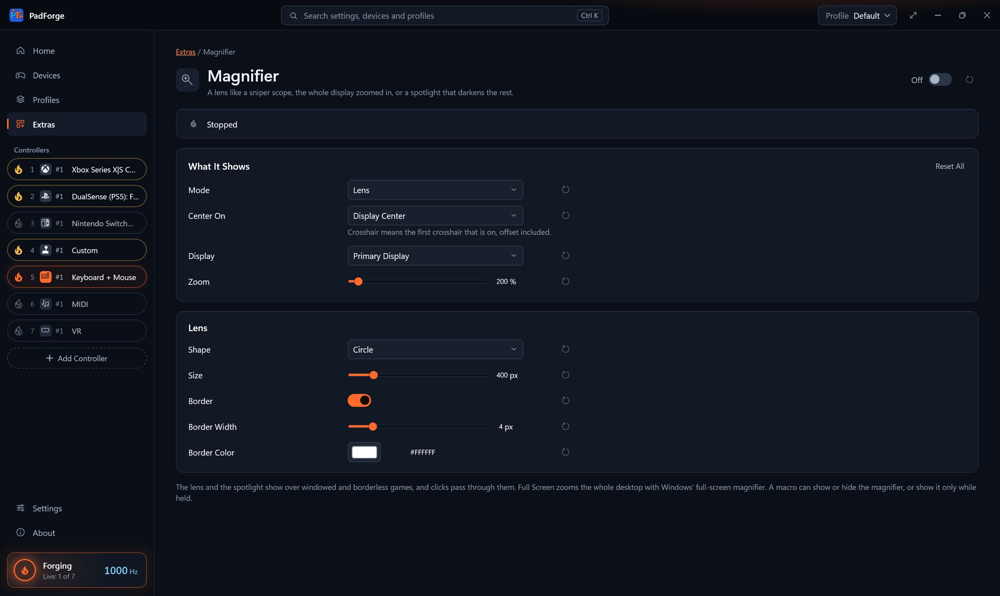
Magnifier
2560 × 1528 JPGNew in 6.0.0

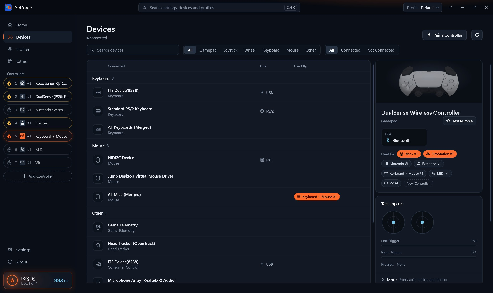
Devices
2560 × 1528 JPGNew in 6.0.0

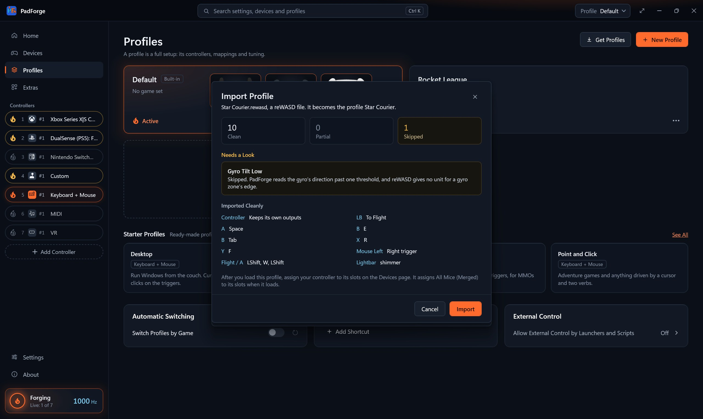
reWASD and DS4Windows import
2560 × 1528 JPG

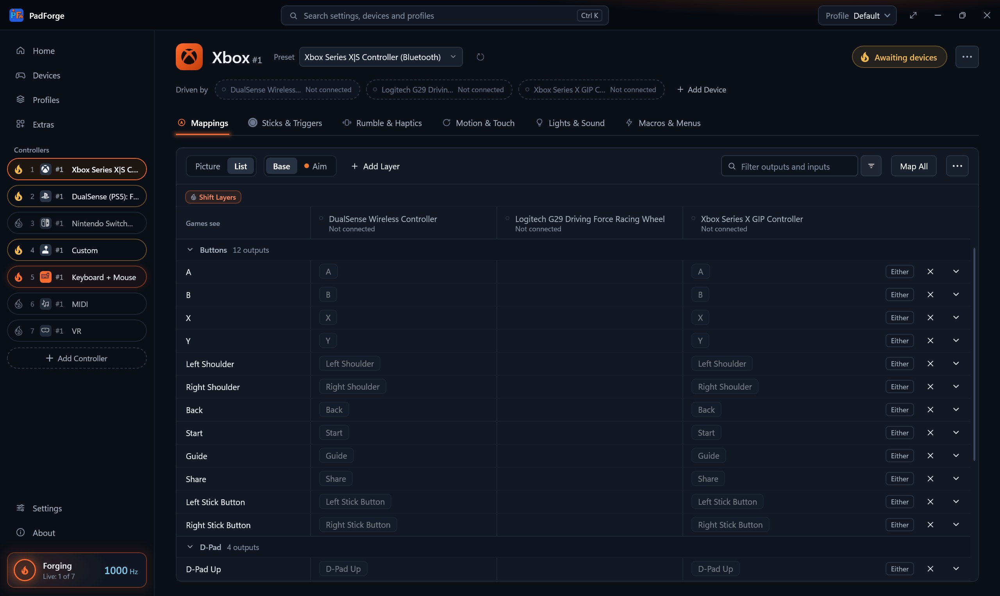
Mappings list
2560 × 1528 JPG

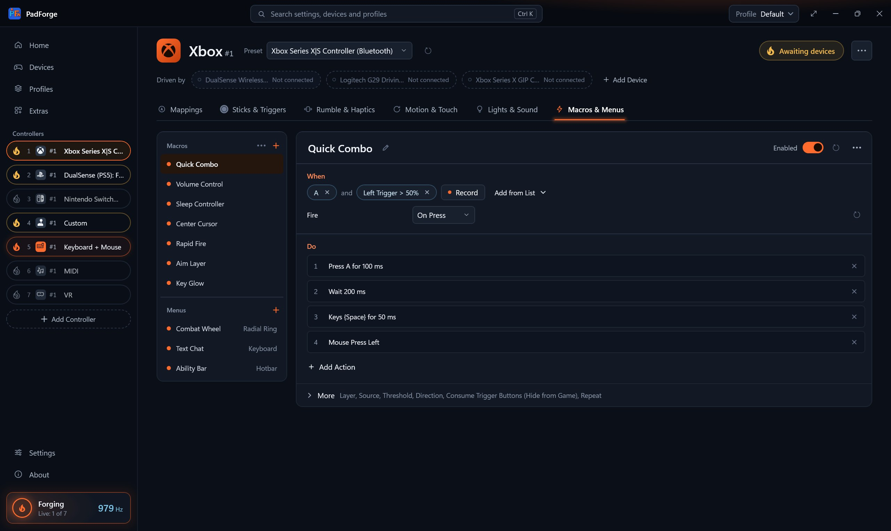
Macros and menus
2560 × 1528 JPG

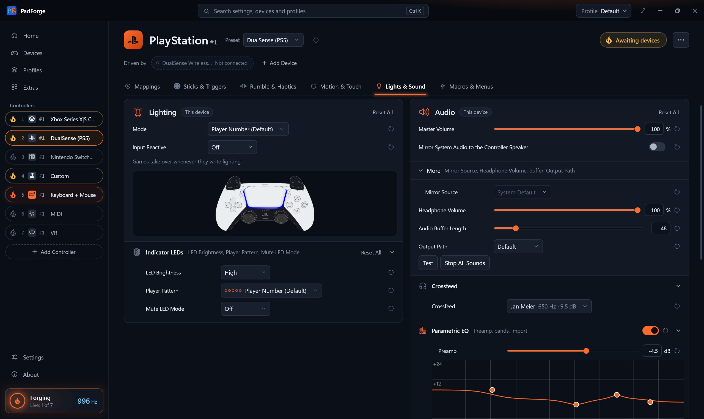
Lights and sound
2560 × 1528 JPG

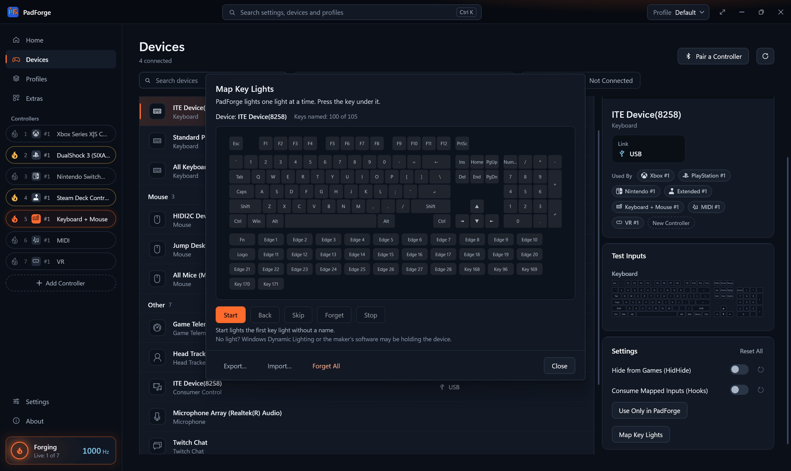
Map Key Lights
2560 × 1528 JPG

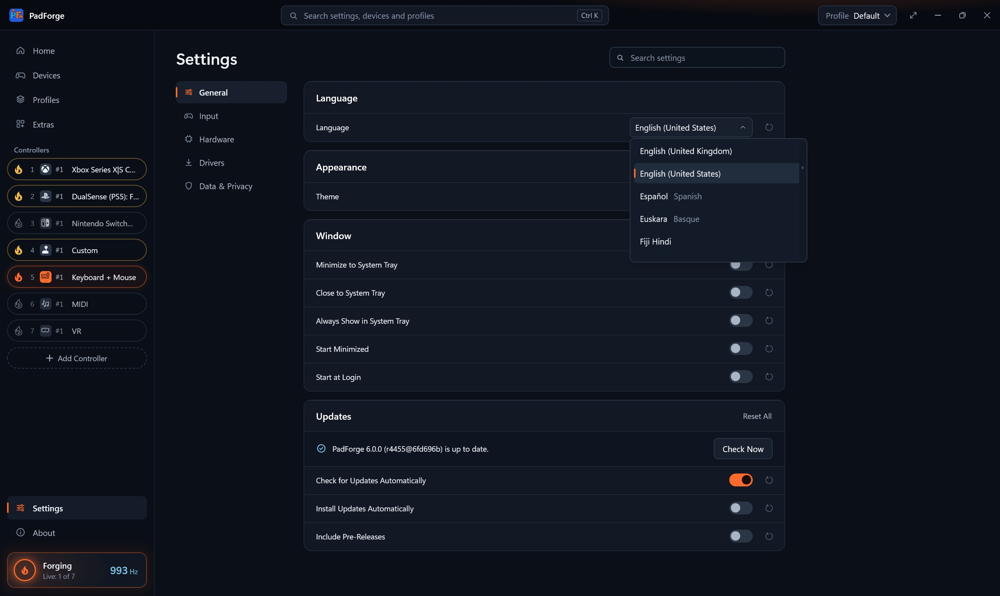
109 languages
2560 × 1528 JPG
Identity
Brand assets
The PadForge logo and app icon,
with transparent backgrounds.

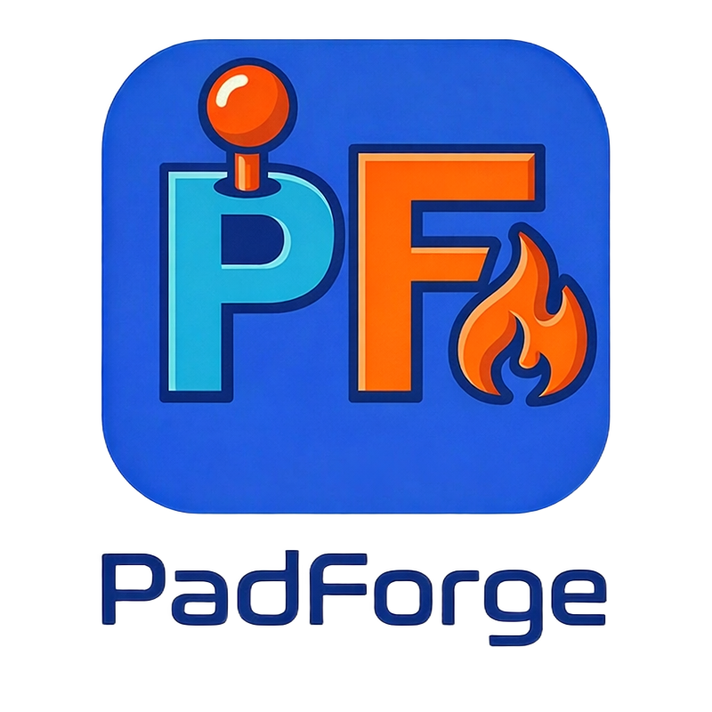
Logo
800 × 800 PNG

App icon
571 × 533 PNG
The project
About PadForge
PadForge is a free controller remapper for Windows. It maps gamepads, wheels, flight sticks, keyboards and mice onto as many as 16 virtual controllers, knows 2,687 devices by their USB identity and lights 1,572 RGB devices by itself. Players can tune stick response and gyro aiming, build macros and save profiles for individual games. PadForge also imports supported Steam community layouts, reWASD configs and DS4Windows profiles, and connects browser-based controllers. Its source code is available under CC BY-NC-SA 4.0.
“PadForge shines best in its incredibly vast range of supported controller types.”
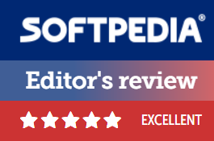
Softpedia editor’s review Editor’s Pick · rated 5 out of 5